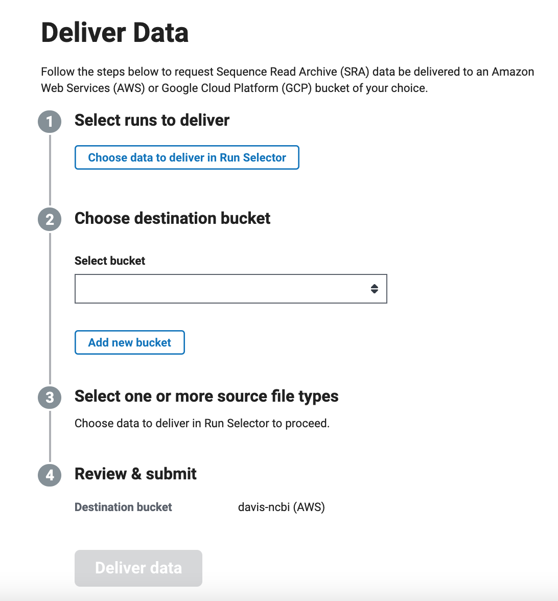
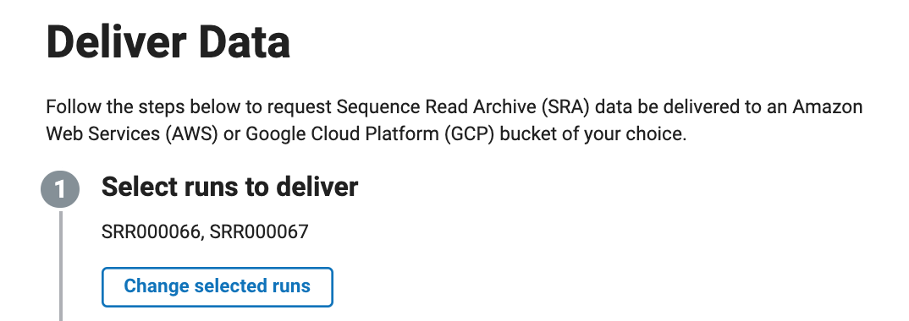
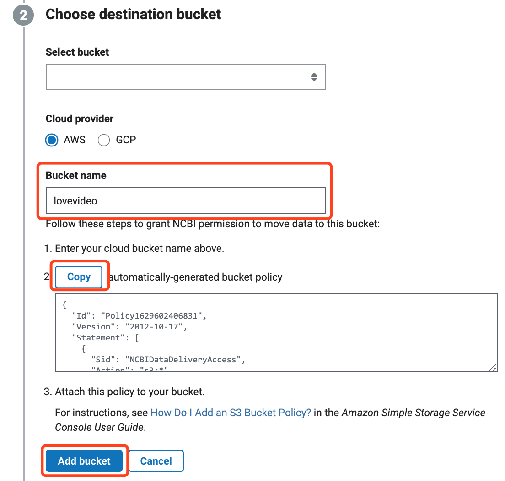
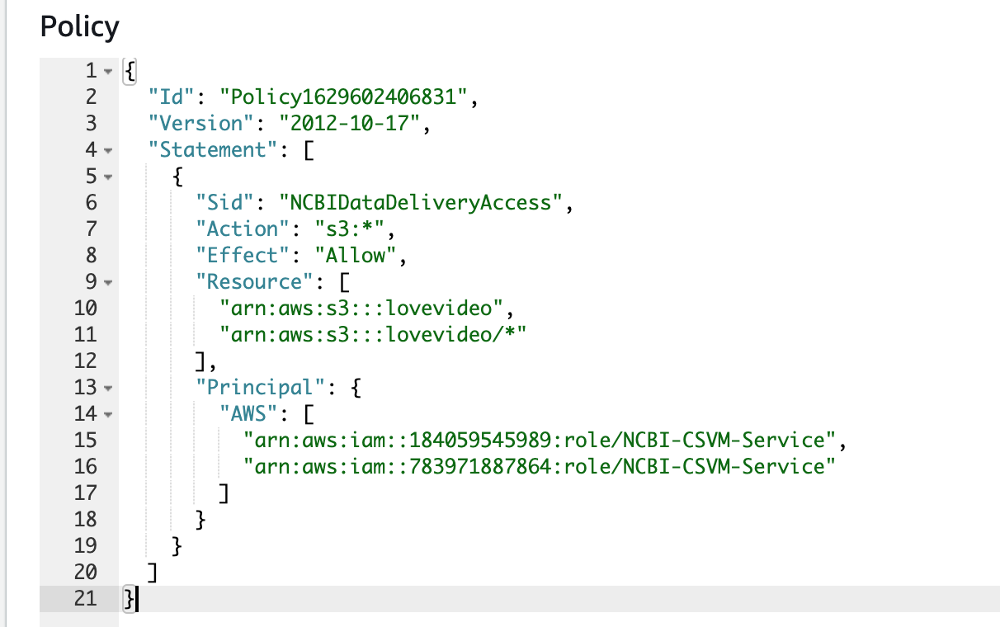
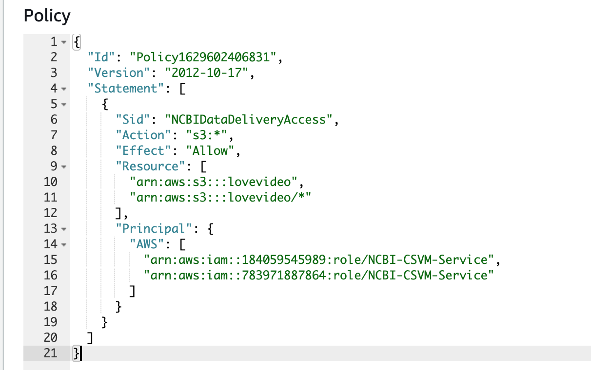
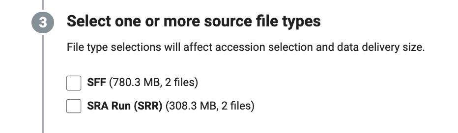
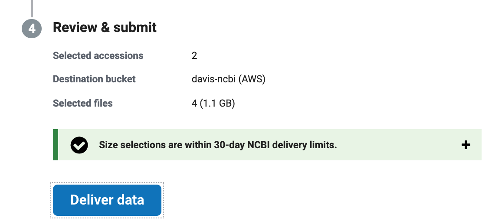
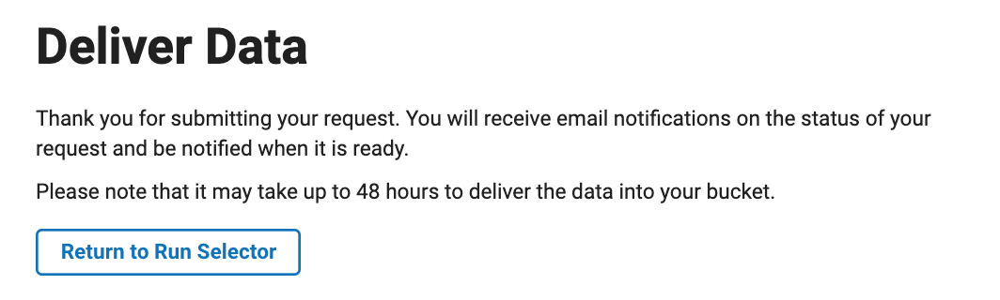

善物7 - NCBI上的数据直接导入AWS
云是未来，全世界有很多公开数据集保存在AWS上，称之为aws的opendata，NCBI自然不例外， 现在ncbi已经支持提供数据从他的S3桶直接导入到用户自己的S3桶。 -- D.C
关于公开数据集
查看这篇帖子入门系列14 福音！用好AWS公开数据集
关于准备工作
- 知道你要的数据，废话
- 有个AWS海外账号
- 在弗吉尼亚区建个S3桶
NCBI 上的数据
登录NCBI
登录NCBI这个网址,点击log in，登录。

选中数据
点击 Choose data to deliver in Run Selector , 页面会跳转到data select 界面，假如说我选择这个数据 SRP000002,就会出现如下界面。

- step1: 勾选我们要下载的数据
- step2: 点击 Selected
- step3: 点击 Deliver Data
可以看到第一步选中数据已经完成。

设置S3桶
- 由于目前NCBI支持的AWS区域为 弗吉尼亚区，US East (N. Virginia) ，所以这里需要选择对应这个区的桶，比如我的叫
lovevideo,系统会同步生成一段 桶策略，用来给到我这个桶允许ncbi往里面推送数据的权限。

- 接下来copy这个桶策略，将其粘贴到AWS console界面的S3桶的permission里，点击 Save Changes。

 

确认数据类型
- 回到NCBI的Deliver Deliver data即可。
 
- 接着会跳出确认框，告诉我每个账户有个30天的周期limit：
NCBI will deliver 4 files (1.1 GB) to: lovevideo (AWS)
Your request to deliver the following data will count against your NCBI 30-day limits for complimentary data transfer*
Cold storage retrieval: 983.4 MB requested from remaining 10.0 TB
Cloud bucket delivery: 1.3 GB requested from remaining 40.0 TB
It may take up to 48 hours to deliver this data to your bucket. Once you submit your request, it cannot be paused or cancelled.
* 30-day rolling window limit for SRA data requests will reset 2021-09-21

等待数据的到来
官方说 up to 48 hours，实测几个小时我的桶就出现了数据，具体可能要看这个数据本身是不是已经被ncbi冻起来了。
数据回国
如果要将数据拉回国内的AWS分析，请参考这篇文章高阶11 使用S3数据同步神器，数据尽在我手
或者，懒人一键部署版 Data Replication Hub，你没猜错，背后还是cloudformtaion ：）
完 & Enjoy~
总须脚踏实地，克勤小物，乃可日起而有功。